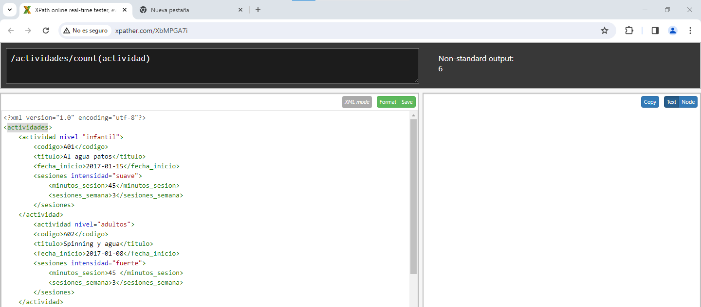

Tema 5 XPath
Ejercicio 1
- 1. Título de las actividades
/actividades/actividad/titulo

- 2. Mostrar el código de la actividad, título y nivel.
/actividades/actividad/codigo/text()|/actividades/actividad/titulo/text()|/actividades/actividad/nivel/text()
- 3. El primer título de la actividad.
/actividades/actividad[1]/titulo[1]
- 4. El último título de la actividad.
/actividades/actividad[last()]/titulo[1]
- 5. Todos los elementos descendientes de las actividades infantiles
//actividad[@nivel="infantil"]
- 6. El nombre de las actividades para adultos.
//actividad[@nivel="adultos"]
- 7. El nombre de las actividades con dos sesiones semanales
/actividades/actividad[sesiones/sesiones_semana=2]/titulo/text()
- 8. Número de actividades
/actividades/count(actividad)

- 9. Si queremos convertir el resultado a cadena de caracteres, podemos usar la función string().
string(count(/actividades/actividad))
- 10. Cuenta del número de actividades infantiles.
//actividades/actividad/count(@nivel="infantil")
- 11. Suma de las sesiones semanales de las actividades para adultos.
sum(/actividades/actividad[@nivel="adultos"]/sesiones/sesiones_semana)
- 12. Nodos de la actividad de código A06.
/actividades/actividad[./codigo="A06"]/node()

- 13. Duración de las actividades con intensidad fuerte
/actividades/actividad/sesiones[@intensidad="fuerte"]/minutos_sesion/text()
- 14. Mostrar el código de las actividades cuya duración coincide con la duración del 1º actividad.
/actividades/actividad[sesiones/minutos_sesion/text()=//actividad[1]/sesiones/minutos_sesion/text()]/codigo
- 15. Título de las actividades del año 2018.
/actividades/actividad[fecha_inicio>="2018-01-01" and fecha_inicio<="2018-12-31"]/titulo/text()